Camiseta manga longa:
- Tecido reciclado
Calça:
-Ziper à prova d'água
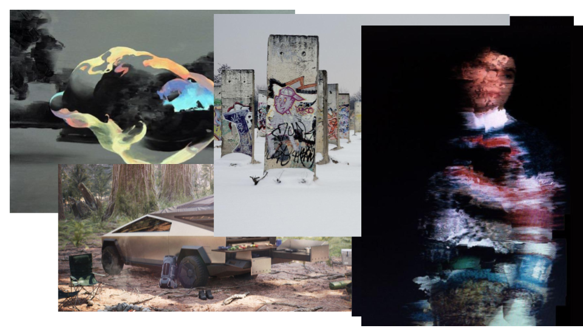
Hybrid Art é a fusão de diferentes mídias e gêneros dentro de novas formas artísticas de expressão. Não subscreve as categorias ou definições usuais estabelecidas. Reside entre, ao redor, acima e abaixo do que é geralmente aceito como “cultura”, sendo experimental e explorando novas ideias de colaboração entre variáveis diversas, transcendendo as fronteiras entre arte e pesquisa, ativismo social, político e cultura.
Cartela de cor
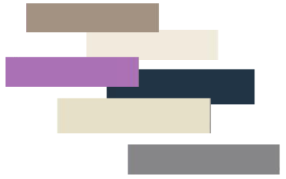Pontos chave
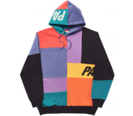
1. Tecidos de antigas coleções reciclados em novos produtos
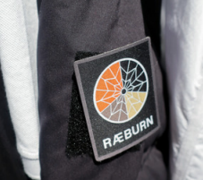
2. Patches removíveis de velcro
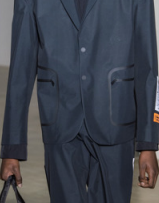
3. Ziper à prova d'água
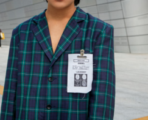
4. Etiquetas de cuidado
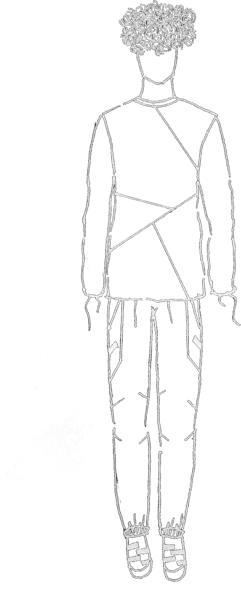
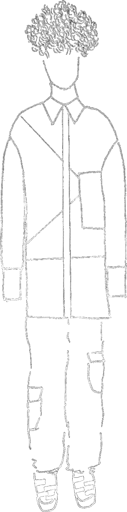
Camisa manga longa:
- Tecido reciclado
- Maxi bolso
Edição comemorativa void 15 anos:
Bolsa cross body
Calça:
-Patches removíveis de velcro
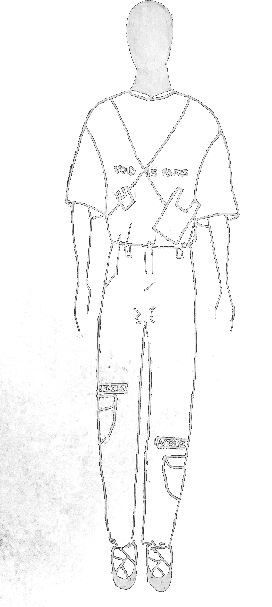
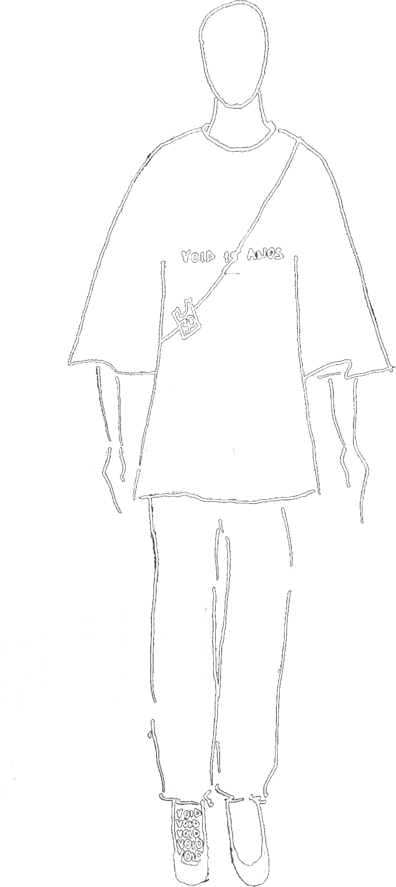
Edição comemorativa void 15 anos:
- Bolsa cross body
- Camisa ampla
Camisa sobre moletom:
- Ziper à prova d'água
- Maxi bolso
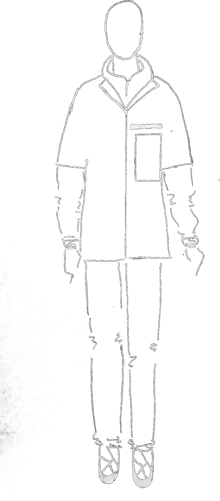

Moletom com camiseta de nylon integrada
Shorts:
- Patches removíveis de velcro
Raincoat:
- Ziper à prova d'água
Calça:
- Patches removíveis de velcro
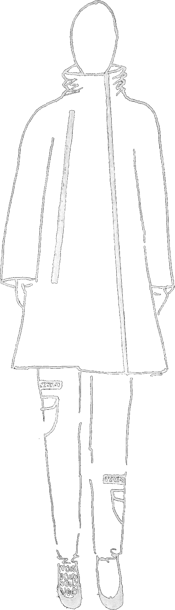
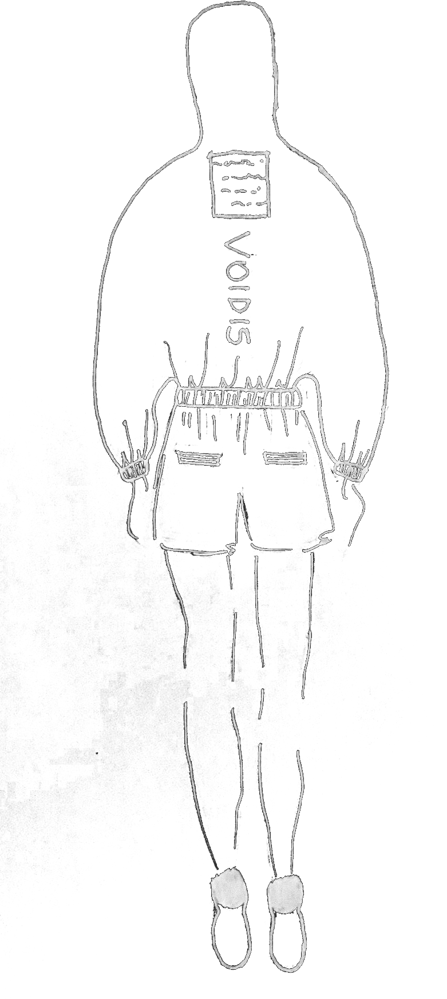
Windbreaker edição comemorativa void 15 anos:
- Etiqueta de cuidado